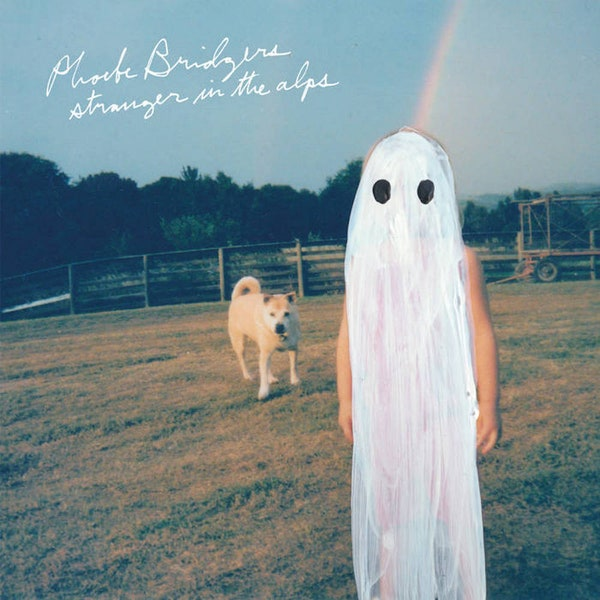

Throughout the semester, I've been looking to answer three essential questions, as seen below. To demonstrate my learning, I've come up with the "perfect playlist." Click the button below to skip to the playlist. Otherwise, below are my personal answers based on research I've conducted
What Makes Music Sound Good?
To answer this question, I had to research what elements actually make up music. A mixture of lyrics, instrumentals, and vocals is what makes a song sound good. However, each individual has their own personal taste in music, often shaped by music heard during childhood. The album pictured above is my personal favorite sonically pleasing album, "Landmark" by Hippo Campus.

How Does Music Influence Our Emotions?
Music can help regulate our emotions because humans are empathetic. Oftentimes, many people can have similar feelings to what a singer's lyrics may encapsulate. "Stranger in the Alps" by Phoebe Bridgers is my go-to album when I'm feeling melancholic, as the songs are slower and touch on complex themes like death and coping with mental illness.
What Makes Music Worthwhile to Create/Consume?
This is a subjective question, but my personal opinion is that music is worth consuming because the lyrics can be relatable while the music itself can sound good. I've found great comfort in hearing other people share similar experiences as me, and I find it impressive that they're able to turn those experiences into art through music. This album, "I Like It When You Sleep, for You Are So Beautiful yet So Unaware of It" by the 1975 deals with complex themes such as religion and politics, among many other issues, while also sounding pleasant.